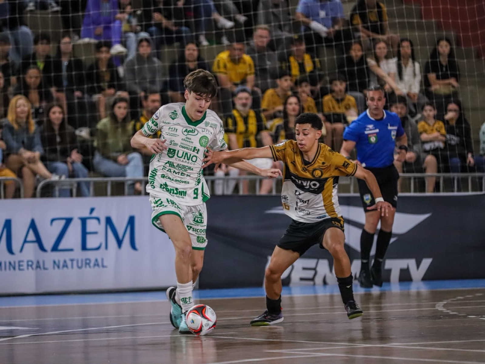
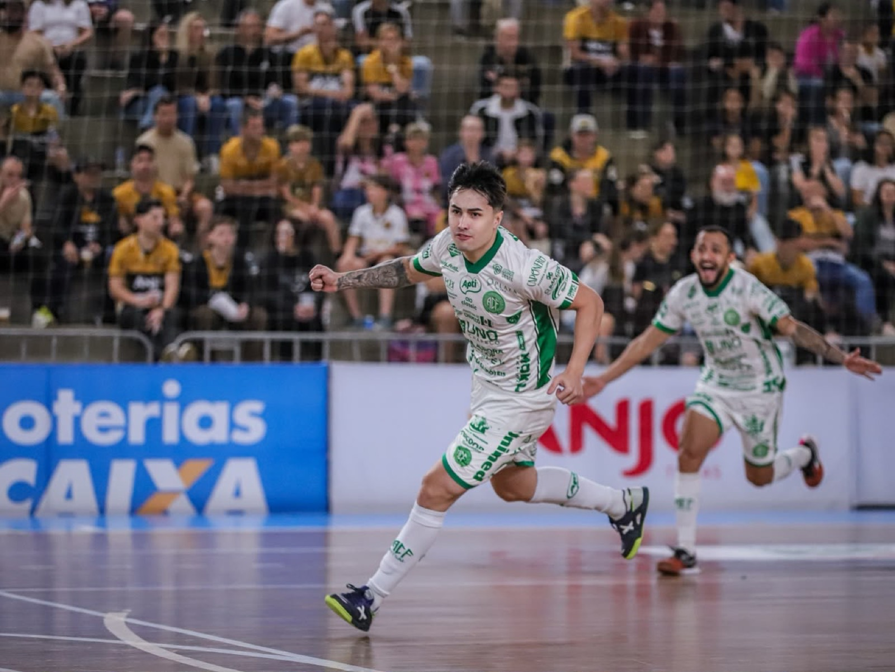
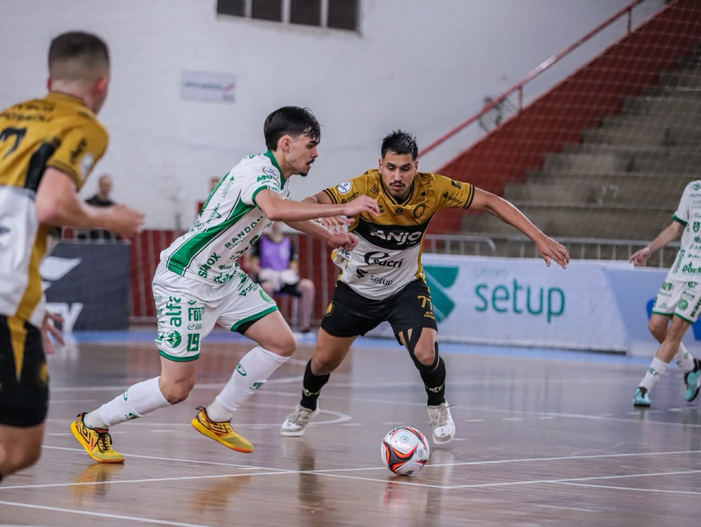
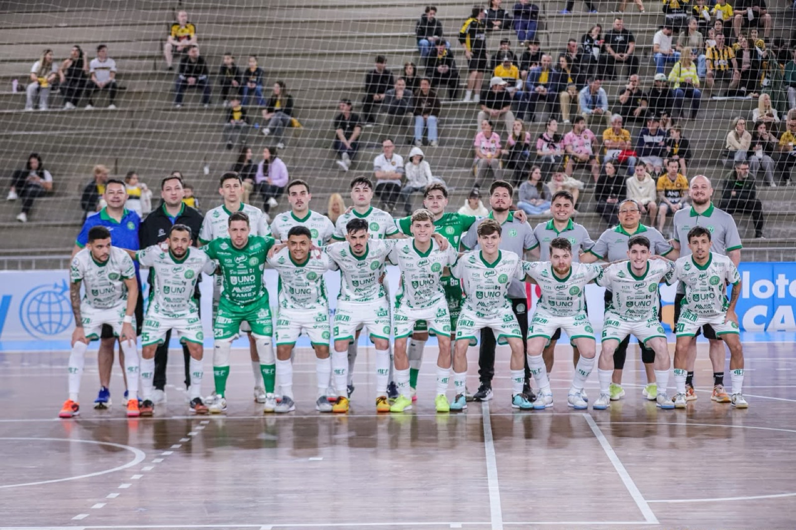

A Prefeitura de Chapecó/Chapecoense/Unochapecó conquistou uma importante vitória fora de casa na noite deste sábado (24). O Verdão das Quadras derrotou o Criciúma por 2 a 1, no Sul do Estado, pelo jogo de ida das quartas de final do Campeonato Brasileiro de Futsal, e ficou em vantagem na disputa por uma vaga na semifinal.
A equipe do Oeste começou a partida em ritmo forte e abriu o placar com apenas 34 segundos. Após cobrança de falta ensaiada, Samuka deu um passe de calcanhar para João Camilo acertar o ângulo. A Chape Futsal manteve o controle das ações e foi para o intervalo vencendo por 1 a 0.

Na segunda etapa, aos três minutos, Lucas ampliou a vantagem com um forte chute de fora da área. O Criciúma tentou reagir e, mesmo após a expulsão de Paulista, conseguiu descontar com Saymon, utilizando o goleiro-linha. Nos instantes finais, a Chapecoense mostrou segurança defensiva e confirmou o resultado positivo.


Decisão em Chapecó
Com a vitória, a Chapecoense precisa de um empate no confronto de volta para avançar à semifinal. O Criciúma terá que vencer no tempo normal para levar a disputa à prorrogação.
A partida decisiva será no próximo sábado (31), às 17h, no ginásio do SESC, em Chapecó, com transmissão da CBFS TV, Ulisses TV, Gol Brasil, Lance! e BandSports.

Fotos: Rodolfo May/Criciúma Futsal